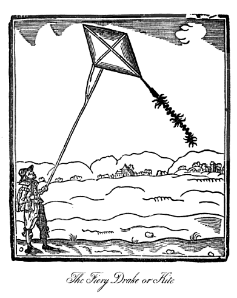
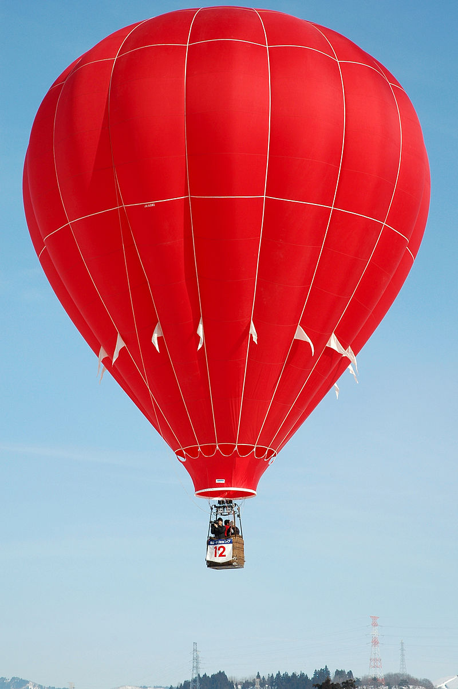
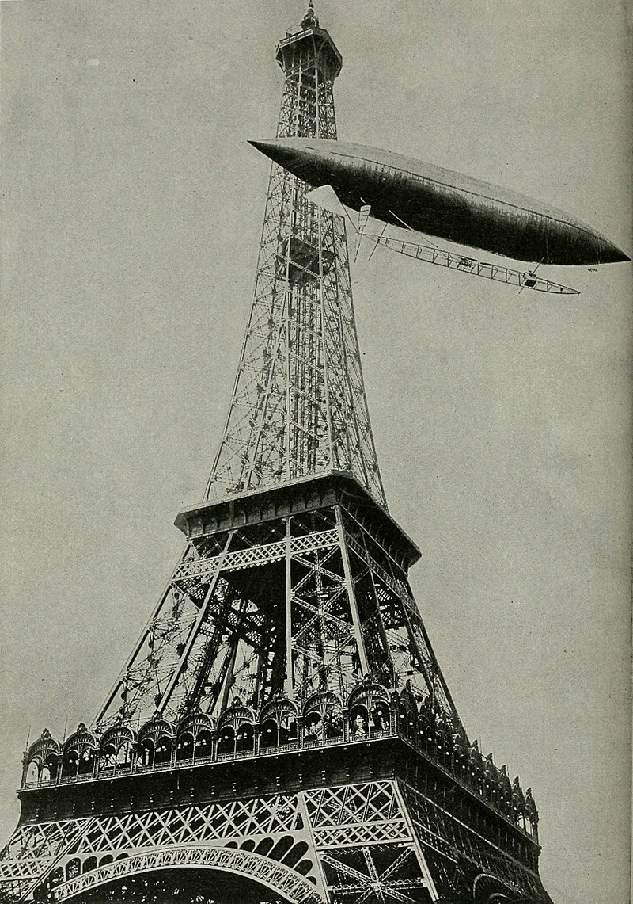
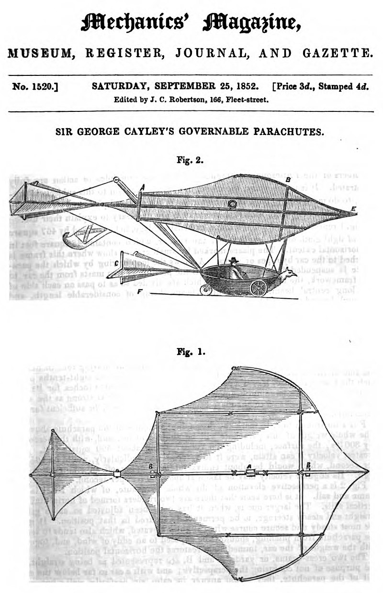
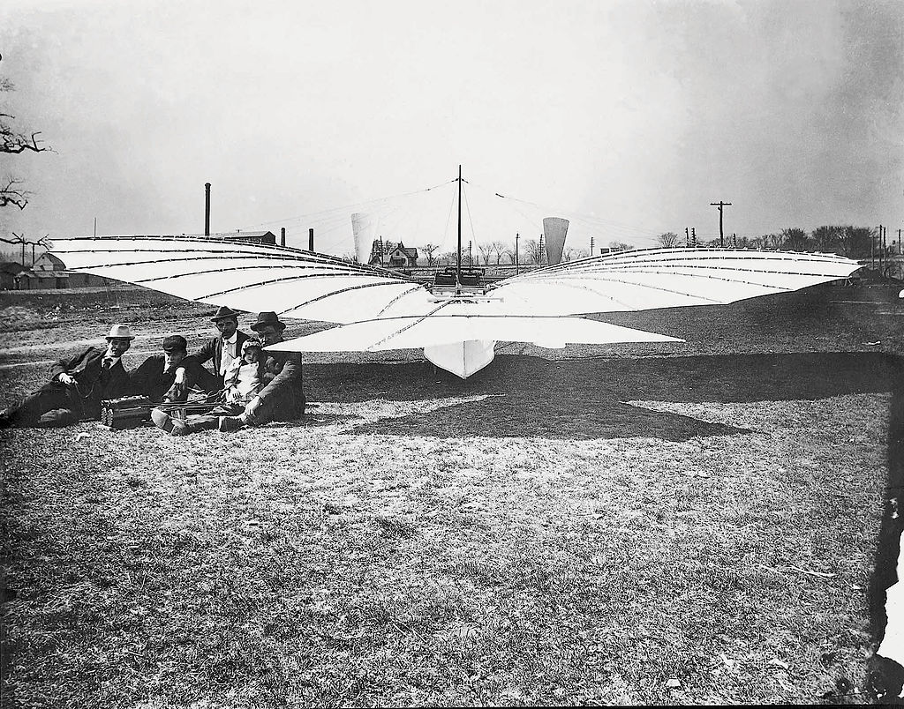
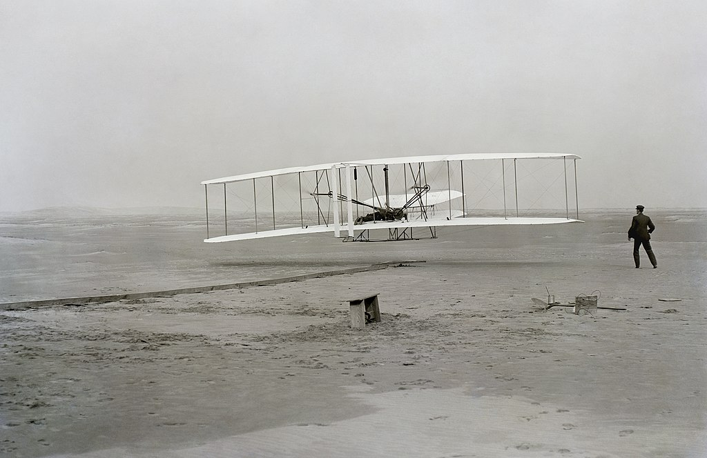
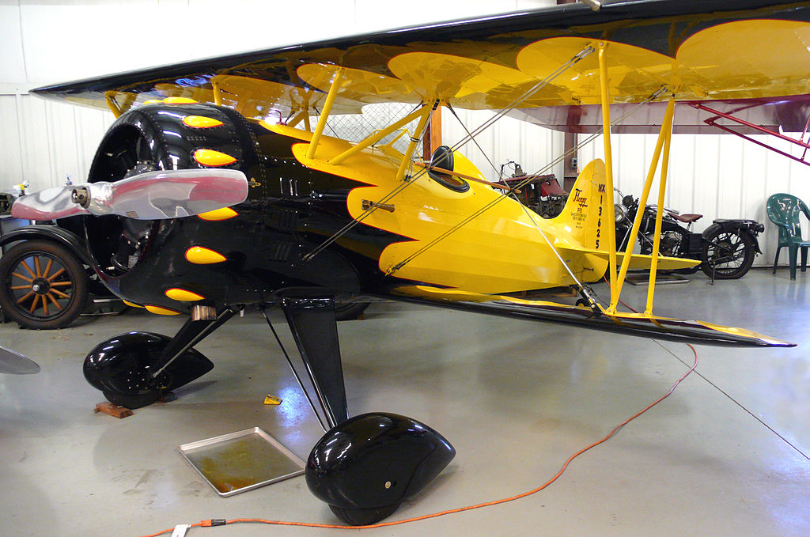
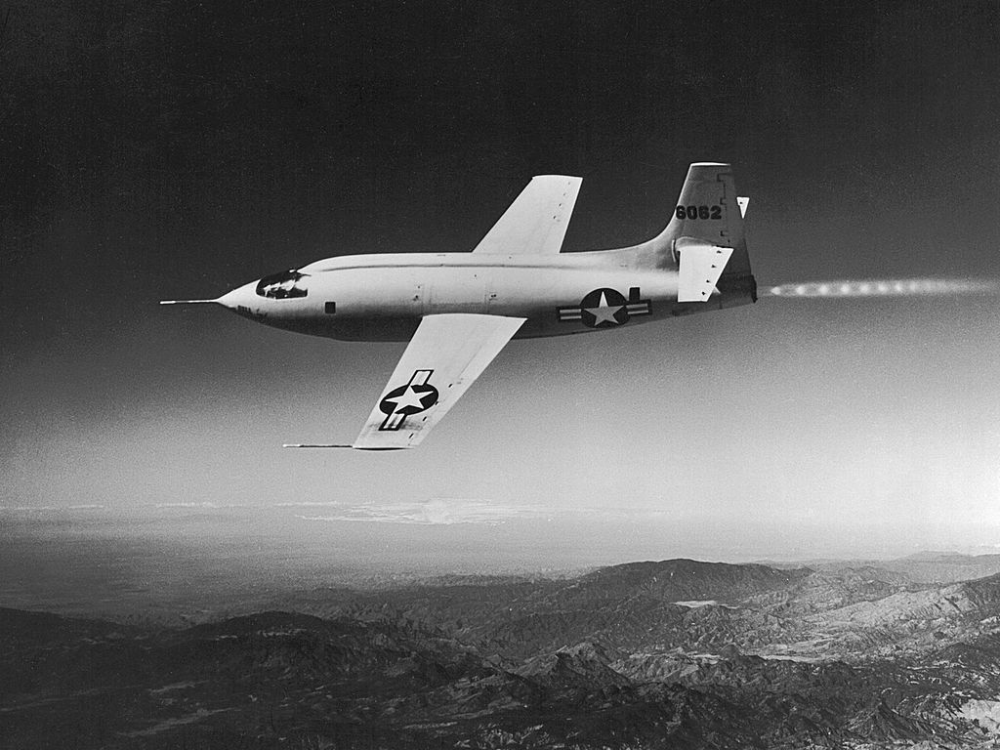

Tech: Now and Then

1 March 2021
One of the first "planes" to exist, the 14-bis. It was created by Brazillian Alberto Santos-Dumont.
Aviation is one of the most important inventions to date. It can get many people, animals, things, etc. to anywhere they need to be astronomically faster than the average land travel speed. It can get someone from New York to LA in about 3 hours, which would usually take a full 24 hours by land. Finally, it can go anywhere in the world with no restrictions, unless it doesn't have any fuel that is. But, how did aviation start? Was it completely started by the Wright Brothers? Of course not. There's a lot more people who contributed to the idea.
A print of a kite from John Bate's 1635 book "The Mysteryes of Nature and Art"
The first device to utilize man-made flight would be the kite. The first evidence of it was in China around 5th century BCE. These kites would often emulate other animals, like insects, birds, or mythological beasts. Kites were able to measure distances, test the wind, signal/communicate messages, and even lift men. The earliest known man who was lifted by a kite would be Yuan Huangtou in 700 BCE, a Chinese prince taken prisoner after a takeover of his kingdom. The next thing that appeared would be rotor wings, which were on a toy called the bamboo-copter in 400 BCE. Finally, the last thing that appeared was a form of hot-air balloon, which was a sky lantern that was launched into the sky during festivals.
A hot air balloon, flown in 2006.
Many things happened in 1783 in the world of hot air balloons. People started to realize that they were easy to make and very attractive for money-making. On June 4th of that year, the Montgolfier brothers demonstrated their unmanned balloon at Annonay, France. On August 27th, Jacques Charles and the Robert brothers launched the world's first unmanned hydrogen balloon in Paris. Then, on October 19th, the first manned flight was done by the scientist Jean-François Pilâtre de Rozier, the manufacture manager Jean-Baptiste Réveillon, and Giroud de Villette. Next, on the 21st of November the Montgolfiers had a free flight with human passengers. Finally, on December 1st, Jacques Charles and Nicolas-Louis Robert went 36km in their balloon, going 1,800 feet high. Charles then decided to go by himself to 9,800 feet, which resulted in severe ear pain (pressure) and then never flew again. Ballooning was very popular for a while, as many people wanted to know how it felt to go so high up in the air. The major issue is that these balloons were tough to steer. So, someone came up with a solution...
Santos-Dumont's "Number 6" rounding the Eiffel Tower in the process of winning the Deutsch de la Murthe Prize.
These types of airships were called "dirigible balloons", which were able to be steered any way they liked. The only issue is: they wouldn't fly very well usually. Henri Giffard flew 15 miles in a steam engine craft in 1852, but it didn't see any use beyond that. Charles Renard and Arthur Krebs in 1884 flew La France, a 170ft long balloon that flew 5 miles. What came from these were mostly blimps, which could fly much better due to the invention of the internal combustion engine (diesel engines). Now, wait, we're getting ahead of the invention of heavier than air machines. Let's go back to that.
One of the inventions of Sir George Cayley, the governable parachute. It was created in 1852 with all of his research he had done over the years.
Sir George Cayley is considered the father of the aeroplane, and for good reason. He put in much of the research into how to have heavier-than-air flight, or a device that has more volume than air. He also showed how to glide flight accurately, as well as the configuration of a fixed-wing, fuselage, and tail. In 1810, he identified the four vector forces that effect aircrafts - thrust, lift, drag, and weight. Finally, in 1848, he lifted a child off of the ground using a triplane design and published his works in 1852.
The next major event was from John Stringfellow, who achieved the first powered flight in a non-manned vessel in 1848. It originally only flew 10 feet before crashing, but on the second attempt it flew much farther, traveling about 90 feet. The one to achieve aspect ratio of a wing was Rancis Herbet Wenham in 1857, who made many unmanned and manned gliders to show that there was a perfect ratio for how a wing should be constructed based on weight and wingspan.
Soon enough, aircrafts started to focus more on decent gliding due to them not lasting long at all in the air, or crashing down to the ground and crumpling. The oldest man-made flying machine still in existence is the Biot-Massia glider, which was created by the man of the same name in 1879. Other things were made, but there were so many that it is very hard to list them all.
The No.21 Monoplane and its crew, with Whitehead, its inventor, closest to the plane with his daughter Rose on his lap.
Now the most controversial plane - the No.21 monoplane. The plane was reported to have made a controlled, powered flight with people on it in August 14th, 1901. This would be a full two years and a half before the Wright Brothers. But, not much evidence is seen of this. One newspaper published a story about it, but there were no researchers or credible sources there to back them up. A popular authoritative source for aviation listed them as the first controlled flight of a heavier-than-air craft, but many others disagree. Until it is confirmed, it will be debated over until the end of time.
A picture of the Wright Flyer, which is the first confirmed sustained flight with a powered, controlled aircraft.
Now: the main event. The Wright Brothers. They, before the plane, built many kite and glider designs from 1898 to 1902 before deciding on a powered design, as they were becoming much more popular. In 1902, after many failures with a wind tunnel that they had designed, they perfected a glider with air control. Using this wind tunnel, they were able to construct their Wright Flyer. The first flight by the Wright brothers was done by Orville, who was able to go 120 feet. Wilbur Wright then flew 852 feet on the same day. The planes were actually insanely unstable, as shown in the modern analysis by Fred E. C. Culick and Henry R. Rex, but the Wright Brothers knew how to fly it so well that it could get off the ground and fly it for a little while. Soon enough, they made a Flyer III that could fly for a much longer time (up to 40 minutes) and flew far (24 miles).
On an unrelated note, the first "helicopter" to be created was of Enrico Forlanini's design, which was created in 1877. It flew 42 feet off of the ground, then remained for 20 seconds. The first manned helicopter was in 1907, which was created by the Breuet-Richet Gyroplane system. These designs were very impractical though, as they didn't last long in the air.
A picture of the Flagg Biplane. Notice its aluminum structure instead of wood.
The years between WWI and WWII showed massive improvements for aircraft technology. Biplanes started to be made out of aluminum and other high-quality materials. They were mostly inspired from Hugo Junkers, William Bushnell Stout, and Anderi Tupolev's work that showed that more powerful materials could be used on these to make them much stronger. Air shows started to appear, as these machines could fly anywhere and wow the public with its aerial tricks that it could perform. Amelia Earhart, probably the most famous barnstormer, was the first to cross the Atlantic and Pacific ocean in 1928. The first lighter-than-air trips across the Atlantic were done in 1919 through blimps and zeppelins. But, zeppelins quickly came to an end with the Hindenburg disaster in 1937, which killed 35 of the 97 people aboard.
A picture of the Bell X-1 aircraft, the first plane to break the sound barrier.
The next major advancement was from Chuck Yeager, who took the Bell X-1 plane through the sound barrier. Some pilots may have been able to do this when going down to dive-bomb targets during the war, but this was the first controlled level flight to break the sound barrier.
Nowadays, planes aren't really focused on going fast and breaking speed records or having new materials. They're more or less focused on integrating mechanical parts into every part so there's less of a chance for failure. Planes are also going much farther on less gas and aircraft facilities are being added all over the world so, if you have enough money, you can go practically anywhere. At the end of the day, the plane has pretty much been perfected.